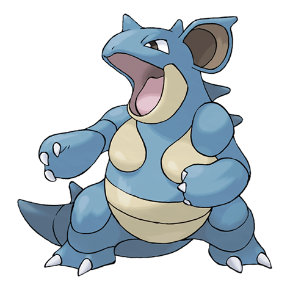

Нидоквин

Nidoqueen — Покемон 1 поколения под номером 31 в Покедекс. Обитает он в регионе Kanto и относится к Ядовитому и Земляному типу. Это финальная стадия эволюции Нидоранки. Тело Нидоквин покрыто чрезвычайно твёрдой чешуёй. Этот Покемон разбрасывает врагов резкими толчками. Нидоквин наиболее сильна, когда защищает своих детёнышей.
Тип и слабости:
Ядовитый
Земляной
Эволюция
# 031 Нидоквин
Финальная стадия